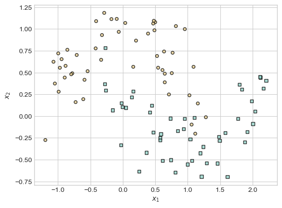
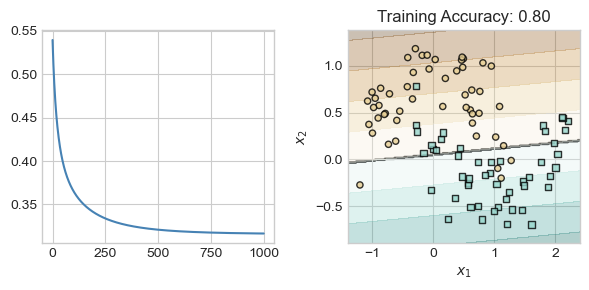

flowchart LR input[Data matrix X] --Matrix-vector\nmultiplication--> l3["Xw"] y[Targets y] --Apply\nloss--> loss["ℓ(Xw, y)"] l3 --Apply\nloss--> loss loss --Compute\naverage-->L
14 The Problem of Features and Deep Learning
Let’s begin by recalling and slightly expanding the empirical risk minimization framework that we’ve developed throughout this course. In the simplest approach to empirical risk minimization, we began with a matrix of features \(\mathbf{X} \in \mathbb{R}^{n\times p}\) and a vector of targets \(\mathbf{y} \in \mathbb{R}^n\). We defined a linear score \(s = \langle \mathbf{w}, \mathbf{x}\rangle\) which we interpreted as producing predictions of the value of \(y\). We then defined a loss function \(\ell: \mathbb{R}\times \mathbb{R} \rightarrow \mathbb{R}\) that told us the quality of the prediction \(s\) by comparing it to a true target \(y\). Our learning problem was to find \(\mathbf{w}\) by minimizing the empirical risk: the mean (or sum) of the risk across all data points:
\[ \DeclareMathOperator*{\argmin}{argmin} \begin{aligned} \hat{\mathbf{w}} &= \argmin_{\mathbf{w} \in \mathbb{R}^p} \frac{1}{n}\sum_{i = 1}^n \ell(s_i, y_i) \\ &= \argmin_{\mathbf{w} \in \mathbb{R}^p} \frac{1}{n}\sum_{i = 1}^n \ell(\langle \mathbf{w}, \mathbf{x}_i \rangle, y_i)\;. \end{aligned} \]
At first, we solved this problem using gradient descent. However, we soon ran into an issue – the linear score \(s = \langle \mathbf{w}, \mathbf{x}\rangle\) is only capable of describing linear structures in the data.
So far, we’ve addressed nonlinearity in two ways. First, we tried manual feature engineering. In manual feature engineering, we apply a feature map \(\phi: \mathbb{R}^p \rightarrow \mathbb{R}^q\) to the rows of the data matrix \(\mathbf{X}\) to produce a new matrix \(\Phi(\mathbf{X})\):
\[ \begin{aligned} \Phi(\mathbf{X}) \triangleq \left[\begin{matrix}\phi(\mathbf{x}_1) \\ \phi(\mathbf{x}_2) \\ \vdots \\ \phi(\mathbf{x}_n)\end{matrix}\right] \end{aligned} \]
Our problem then became to solve the empirical risk minimization problem
\[ \begin{aligned} \hat{\mathbf{w}} &= \argmin_{\mathbf{w} \in \mathbb{R}^q} \frac{1}{n}\sum_{i = 1}^n \ell(\langle \mathbf{w}, \phi(\mathbf{x}_i) \rangle, y_i)\;, \end{aligned} \tag{14.1}\]
where \(\mathbf{w}\) had as many entries as the number of features which we generated using \(\phi\). Later on, we saw that we could actually solve this problem in some cases using kernel methods, which allowed us to use complex feature maps without ever explicitly calculating them. A limitation of both manual feature engineering and kernel methods is that the practitioner needs to make a choice about what features to engineer or what kernels to use. For some data sets it might be relatively easy to make this choice, while for others it might be much harder. For extremely large data sets with very complex patterns, it may be very difficult to figure out what features will facilitate the learning task.
Manual feature engineering and kernel methods were state-of-the-art for many machine learning tasks up until the advent of practical deep learning early in the 21st century.
The Computational Graph
It will soon be very useful for us to start thinking about the operations underlying the computation of the loss in terms of a computational graph. In the computational graph, we break down each operation as an edge in the graph, storing the result of that operation in the nodes.
For example, here’s a high-level computational graph associated with the standard linear model in Equation 14.1 with no feature maps:
If we wanted to apply a feature map \(\phi\), we would need to incorporate one additional step in the computational graph:
flowchart LR input[Data matrix X] --Apply feature\nmap-->l1["Φ(X)"] l1 --Matrix-vector\nmultiplication--> l3["Φ(X)w"] y[Targets y] --Apply\nloss--> loss["ℓ(Φ(X)w, y)"] l3 --Apply\nloss--> loss loss --Compute\naverage-->L
Optimizing the Features
Here’s a superficially simple question about Equation 14.1 and its associated computational graph: what if we could learn both the weights \(\mathbf{w}\) and the feature map \(\phi\) simultaneously? That is, what if we could solve a problem like
\[ \begin{aligned} \hat{\mathbf{w}} &= \argmin_{\mathbf{w} \in \mathbb{R}^q, \color{blue}{\phi \in \mathcal{F}}} \frac{1}{n}\sum_{i = 1}^n \ell(\langle \mathbf{w}, \phi(\mathbf{x}_i) \rangle, y_i)\;, \end{aligned} \tag{14.2}\]
where \(\mathcal{F}\) is some set of possible feature maps?
In general, we have no hope of doing this – there are simply too many possible feature maps. However, if we restrict the set \(\mathcal{F}\) somewhat, then we may have some hope.
In particular, let’s choose a nonlinear function \(\alpha: \mathbb{R} \rightarrow \mathbb{R}\) and a matrix \(\mathbf{U} \in \mathbb{R}^{p \times q}\). We’ll define our feature map \(\phi\) by the formula \(\phi(\mathbf{X}) = \alpha(\mathbf{X}\mathbf{U})\), where \(\alpha\) is applied to each element of the matrix \(\mathbf{X}\mathbf{U}\). We’ll treat \(\alpha\) as fixed but \(\mathbf{U}\) as learnable. This turns our optimization problem into
We now have an optimization problem with two sets of weights: the standard weights \(\mathbf{w}\) and the hidden weights \(\mathbf{U}\). Equation 14.3 defines the structure of a shallow neural network with a single hidden layer.
The computational graph for this Equation 14.3 model now looks like this:
flowchart LR input[Data matrix X] --Matrix\nmultiplication--> l1[XU] l1 --Nonlinearity--> l2["ɑ(XU)"] l2 --Matrix-vector\nmultiplication--> l3["ɑ(XU)w"] y[Targets y] --Apply\nloss--> loss["ℓ(ɑ(XU)w, y)"] l3 --Apply\nloss--> loss loss --Compute\naverage-->L
Model Layers
In this model, the matrix \(\mathbf{U}\) is an example of a so-called hidden parameter or hidden layer. It’s hidden because it’s not involved in the final computation of scores (like \(\mathbf{w}\)) and it’s also not part of the data input. If we were only looking at the inputs and final computational operations of the model, we wouldn’t see \(\mathbf{U}\) at all. We only see it when we look at the complete sequence of network operations.
Importantly, we don’t have to stop at one hidden layer. We could pick a new matrix \(\mathbf{V} \in \mathbb{R}^{q \times r}\) and a possibly-different nonlinearity \(\beta: \mathbb{R} \rightarrow \mathbb{R}\). Then, we could compute our feature map as
\[ \begin{aligned} \phi(\mathbf{X}) = \beta(\alpha(\mathbf{X}\mathbf{U})\mathbf{V})\;. \end{aligned} \]
Then we would have two hidden layers and a longer chain in our computational graph.
A so-called neural network is a machine learning model that involves one or more arrays of hidden parameters. These models are also often called deep learning models – their “depth” is in the unseen layers.
Implementation via Torch
Let’s go ahead and implement some of these models in Torch. For our first implementation, we are going to focus on the simplest linear model without feature maps. The implementation of this model using Torch’s standard neural network model is relatively similar to how we’ve implemented linear models in the past. The main difference is that instead of manually managing a weight vector self.w, instead we manage a nn.Sequential object that contains one or more layers of computation. Here, the Linear layer implements matrix multiplication and holds the analog of our vector self.w. Another difference is that we do not usually implement the loss in the model itself. Instead, we usually call a pre-implemented loss function during the training loop.
from torch import nn
class LinearModel(nn.Module):
def __init__(self, num_features, num_labels):
"""
sets up the model infrastructure
"""
super().__init__()
self.pipeline = nn.Sequential(
nn.Linear(num_features, num_labels) # implements multiplication by w
)
def score(self, x):
"""
computes scores for each class
"""
return self.pipeline(x)
# this is strictly for visualization -- not involved in the training loop
def predict(self, x):
return self.score(x) > 0To see this model in action, let’s generate some data.
import torch
from sklearn.datasets import make_moons, make_circles
from matplotlib import pyplot as plt
import numpy as np
plt.style.use('seaborn-v0_8-whitegrid')
X_train, y_train = make_moons(100, shuffle = True, noise = 0.2)
X_train = torch.tensor(X_train, dtype = torch.float)
y_train = torch.tensor(y_train)
X_val, y_val = make_moons(100, shuffle = True, noise = 0.2)
X_val = torch.tensor(X_val, dtype = torch.float)
y_val = torch.tensor(y_val)Code
def plot_classification_data(X, y, ax, clf = None, thresh = 0, data = "Training"):
assert X.shape[1] == 2, "This function only works for data created with p_dims == 2"
if clf is not None:
h = 0.01
x_min, x_max = X[:, 0].min() - 0.2, X[:, 0].max() + 0.2
y_min, y_max = X[:, 1].min() - 0.2, X[:, 1].max() + 0.2
xx, yy = torch.meshgrid(torch.arange(x_min, x_max, h), torch.arange(y_min, y_max, h), indexing="ij")
XX = torch.stack([xx.ravel(), yy.ravel()], dim = 1)
Z = clf.score(XX)
Z = Z[:,1].reshape(xx.shape)
v = Z.abs().max()
ax.contourf(xx, yy, Z.detach(), cmap = "BrBG", alpha = 0.3, vmin = -v, vmax = v)
ax.contour(xx, yy, Z.detach() > thresh, zorder = -10)
preds = clf.score(X)[:,1] > 0
ax.set(title = f"{data} Accuracy: {torch.mean((preds == y).float()).item():.2f}")
targets = [0, 1]
markers = ["o" , ","]
for i in range(2):
ix = y == targets[i]
ax.scatter(X[ix,0], X[ix,1], s = 20, c = y[ix], facecolors = "none", edgecolors = "black", cmap = "BrBG", vmin = -1, vmax = 2, alpha = 0.8, marker = markers[i])
ax.set(xlabel = r"$x_1$", ylabel = r"$x_2$")fig, ax = plt.subplots(1, 1)
plot_classification_data(X_train,y_train, ax)
The training loop for Torch models looks similar to training loops that we have seen for the perceptron and for logistic regression. There are a few important differences:
- We generally use a pre-implemented optimizer from
torch.optim. Today we’re using gradient descent. - We also use a pre-implemented loss-function. Today we’re using the cross-entropy loss. As you may remember, the combination of a linear model with the binary cross-entropy loss means that we are working with our good friend, logistic regression.
- Instead of manually computing a gradient and writing out gradient descent, instead we make the rather cryptic calls
loss.backward()followed byopt.step(). As we’ll soon discuss,loss.backward()actually handles all the gradient calculations for us (no more calculus by hand!), whileopt.step()takes that gradient information and uses it to update the parameters.- After each call of
loss.backward(), it’s necessary to callopt.zero_grad()in order to “zero out” the gradient information computed in the previous loop.
- After each call of
def train_model(model, num_steps, **kwargs):
# define the loss function L for the linear model
loss_fn = nn.CrossEntropyLoss()
# instantiate an optimizer -- gradient descent today
opt = torch.optim.SGD(model.parameters(), **kwargs)
# collect the values of the loss in each step
loss_train_vec = []
loss_val_vec = []
for i in range(num_steps):
s = LM.score(X_train) # compute the scores
loss = loss_fn(s, y_train) # compute the model loss
loss.backward() # auto-compute gradient
opt.step() # optimizer updates params
opt.zero_grad() # zero out the gradient
# for tracking model progress on the training set
loss_train_vec.append(loss.item())
# and on the validation set
s_val = LM.score(X_val)
loss_val = loss_fn(s_val, y_val)
loss_val_vec.append(loss_val.item())
return loss_train_vec, loss_val_vecNow that we have defined a model and a training loop, let’s go ahead and train the model!
LM = LinearModel(2, 2)
loss_train, loss_val = train_model(LM, num_steps = 1000, lr = 0.1)Now that we’ve trained the model, let’s see how we did on the training set:
fig, ax = plt.subplots(1, 2, figsize = (6, 3))
ax[0].plot(loss_train, c = "steelblue", label = "Training")
plot_classification_data(X_train, y_train, ax[1], clf = LM)
plt.tight_layout()
Yep, that’s logistic regression! We’ve fit a reasonable classifying line, but haven’t captured any nonlinear trend.
Looking Ahead
So far, we have seen that a single hidden layer can help us learn nonlinear decision boundaries in data, without the need to construct handmade features or use kernel methods. However, we now have a wide range of both theoretical and practical questions ahead of us.
- Are these models still convex? Can I still use gradient descent?
- Isn’t it hard to compute gradients for these more complicated models? How does anyone keep track of all the calculus?
- How many layers should I use in my models? How large should the matrices be?
- How should I adapt my models when I am working with specific kinds of data, such as text, images, or audio?
- How should I guard against overfitting as my models get progressively more complex?
© Phil Chodrow, 2024